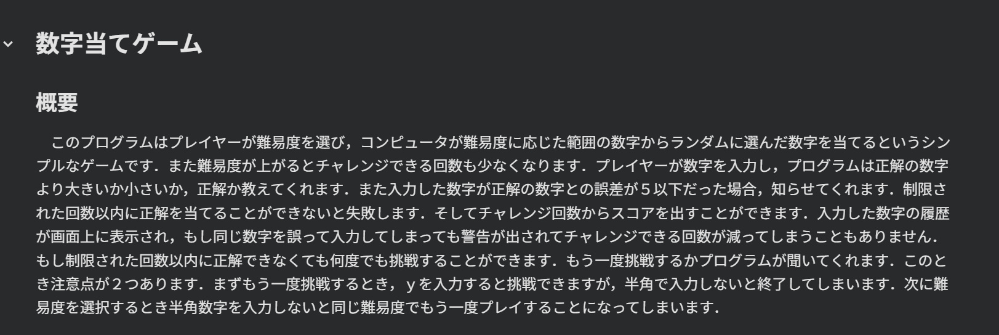
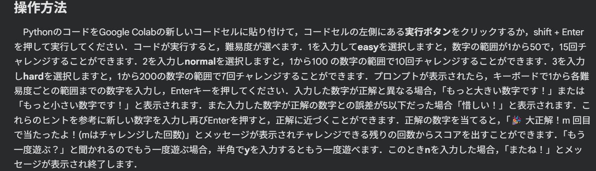
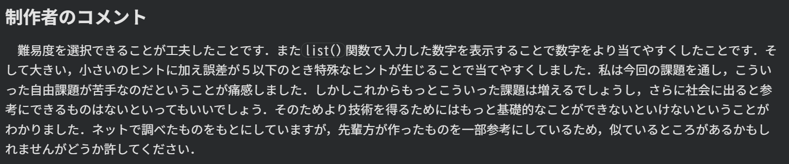
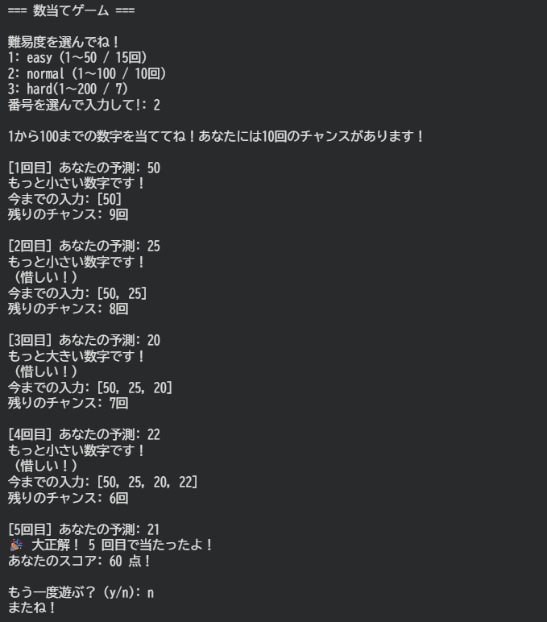
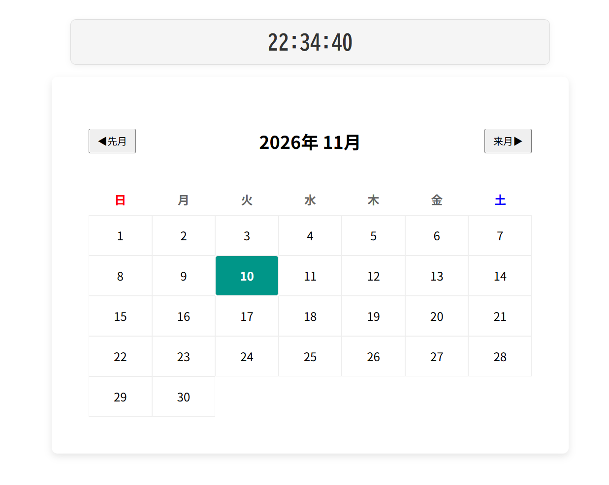
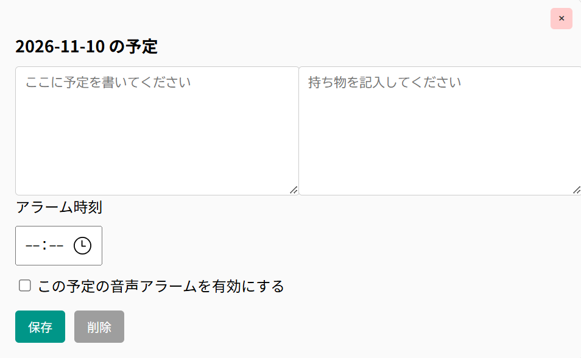
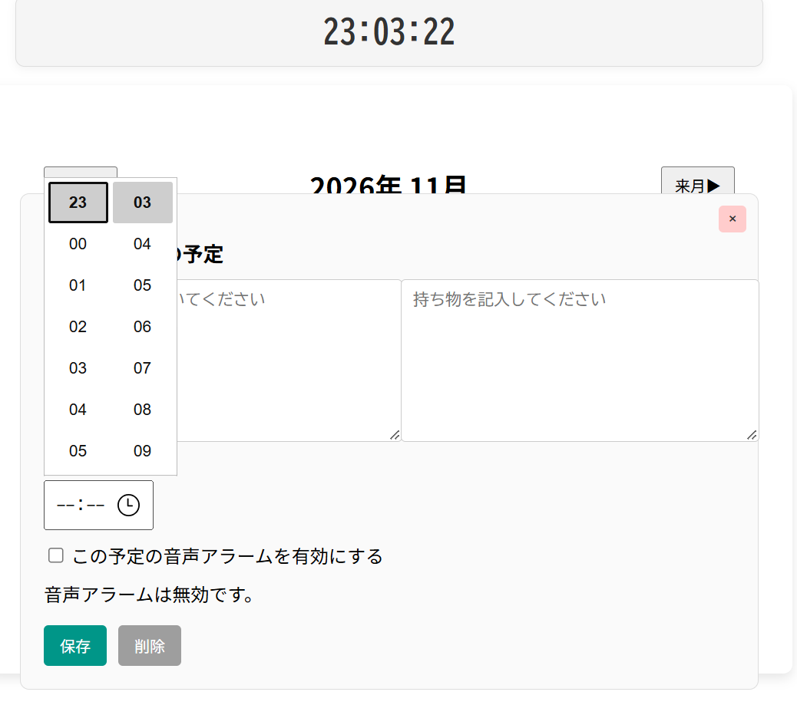
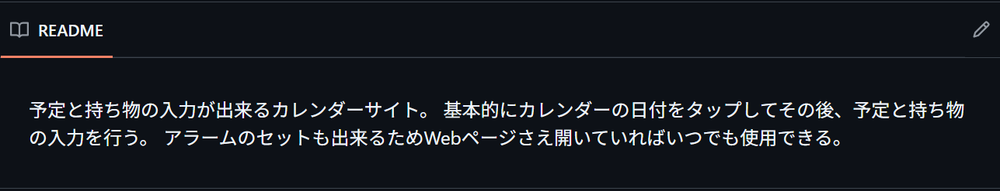

【課題04】 Python自由課題：数字当てゲーム
リンク: Google Colab ノートブック




大阪公立大学工業高等専門学校 総合工学システム学科 知能情報コース
高専2年生 (16歳)
リンク: Google Colab ノートブック




成果物概要
私達の班が作ったものは予定表のwebサイトだ．図1のように日付を選択すると予定と必要なもちものが入力できる．
また図1の左下にある白い四角を選択すると図2のように時間を入力することができるため，アラームが設定できる．
運用方法としては，パソコンで作業をしているときにアラームが音でしらせることで，
予定通り行動できるようにする．webサイトであるためスマートフォンでも使用することは
可能だが開いているページを閉じてしまうとアラームがならなくなるため使いづらい．
そのためスマートフォンでも使いやすいように改善することが目標だ．
自分の役割・担当
カレンダーのコードとしてどのようなものがよいかを調べて書いた．
高専祭の日に自分たちが作ったものを来場者がわかりやすいように説明すること
リンク: GitHub リポジトリ



